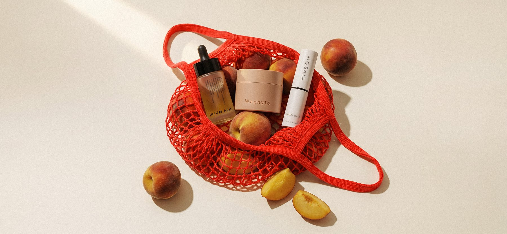
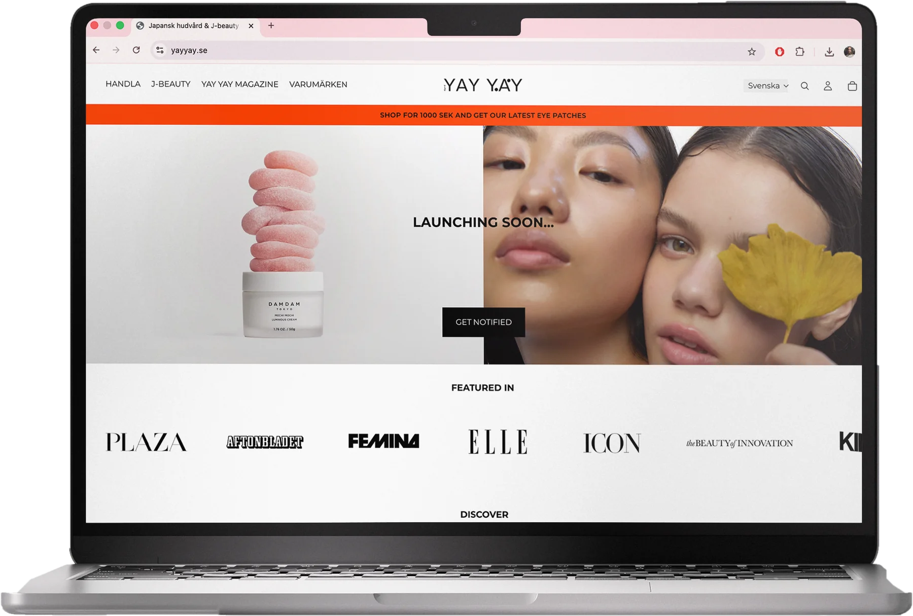
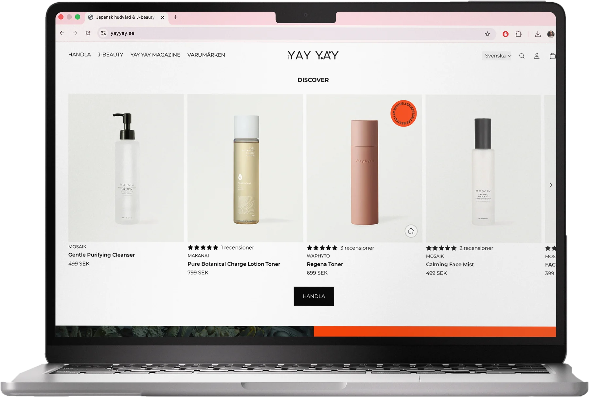
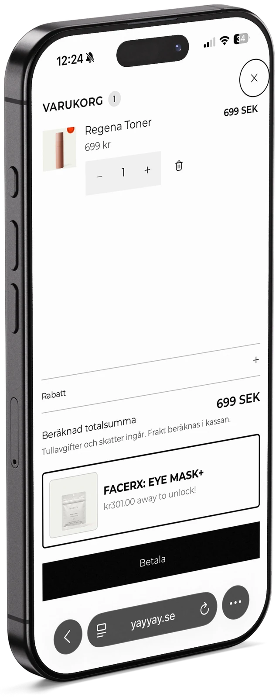
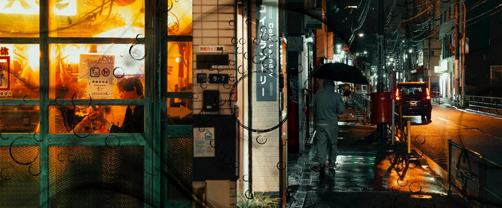

YAY YAY

My role
- RoleDesign intern, focused on UX
- TeamMostly solo, after a Shopify intro from a designer colleague
- What I didUser testing, the cart and navigation redesign and the site layout. Also weekly articles, product images and descriptions
- Not my workLogo, pattern, brand identity and moodboard
- ToolsFigmaShopifyThink-aloud testingPhotoshop
Overview
YAY YAY sells Japanese skincare online. Customers had trouble getting through the cart to checkout. I tested the site with users and redesigned the parts that slowed them down.
User testing
I used think-aloud tests, where people say what they think while they shop. That shows exactly where they hesitate.
After each change I tested again, to make sure the fix didn’t create a new problem.
Layout
More whitespace, a clearer hierarchy and less information per screen. Products sit on white backgrounds, so each one stands out.



The shopping cart
The cart was the biggest problem. It was cluttered, you couldn’t add or remove products, and it listed payment methods that showed up again on the next step. Some of them didn’t even work.
I took the payment methods out of the cart and added one clear Pay button, so the options only appear once, after you click it. The cart is now clean and easy to scan.
I also redesigned the navigation menu, so key information is easier to find.

Content and imagery
I also published a weekly article with my own images, and uploaded product images and descriptions. This part followed YAY YAY’s guidelines and existing look.



Result
Conversion went up after the changes. The figures are confidential.
What I learned
Removing things often helped more than adding them. Fewer steps and less information made the cart easier to use.